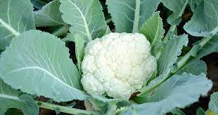
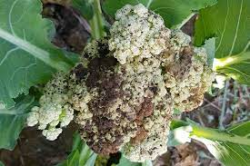

Crop Overview
Cauliflower (Brassica oleracea var. botrytis) is a cruciferous vegetable known for its compact, white head, also called the "curd." It belongs to the Brassicaceae family and is rich in vitamins, fiber, and antioxidants.

Cauliflower is a cool-season crop, and its mild, nutty flavor makes it a versatile ingredient in various cuisines. From creamy cauliflower soup to roasted cauliflower steaks, it offers a range of culinary possibilities.
Cultivation Practices
Successful cauliflower cultivation requires careful attention to planting, soil conditions, and climate. Here are key cultivation practices:
- Planting: Start cauliflower seeds indoors and transplant seedlings when they are 4-6 weeks old. Choose a sunny location with well-drained soil.
- Soil Conditions: Cauliflower prefers fertile soil with good drainage. Incorporate organic matter, such as compost, to improve soil structure.
- Temperature: Cauliflower grows best in cool temperatures. Provide consistent moisture and protect plants from extreme heat.
- Spacing: Plant cauliflower seedlings at appropriate spacing to allow for proper air circulation and head development.
Varieties
Various cauliflower varieties offer different colors, sizes, and maturity dates. Some popular cauliflower varieties include:
- Snowball: A classic white cauliflower with a compact head.
- Purple Cape: Known for its vibrant purple color and mild flavor.
- Cheddar: Features an orange head and a rich, cheddar-like flavor.
- Romanesco: Recognized by its unique fractal pattern and nutty taste.
Soil Requirements
Cauliflower thrives in well-drained, loamy soil with a slightly acidic to neutral pH. Consider the following soil requirements for successful cauliflower cultivation:
- pH Level: Aim for a soil pH between 6.0 and 7.0 for optimal nutrient availability.
- Drainage: Well-drained soil prevents waterlogged conditions, reducing the risk of diseases.
- Fertility: Use balanced fertilizers and amend the soil with compost before planting.
Pest and Disease Management
Cauliflower is susceptible to certain pests and diseases that can impact its growth. Implement the following strategies for effective pest and disease management:
- Cabbage Worms: Use row covers and natural predators to control cabbage worms.
- Aphids: Regularly inspect plants for aphids and use insecticidal soap if needed.
- Clubroot: Rotate crops and choose clubroot-resistant cauliflower varieties to prevent this soil-borne disease.

Harvesting and Storage
The timing of cauliflower harvest is crucial for flavor and quality. Harvest cauliflower heads when they reach a desirable size and have a tight, compact curd. Here are some tips for harvesting and storage:
- Harvest: Cut the cauliflower head just below the curd when it reaches a diameter of 6-8 inches.
- Storage: Store harvested cauliflower in the refrigerator. Wrap the head in a plastic bag to retain moisture.
- Use: Use cauliflower within a week for the best flavor and texture.
>